Contracts
Contracts in LOGOMATE [Conditions/Parameters] are agreements between a supplier and a customer regarding the delivery of a specific SKU.
The contract does not specify concrete delivery quantities or dates but merely defines the total quantity to be delivered within the agreed period (quantity contract).
The goods must be ready at any time at the specified time.
Customer contracts
Customer contracts do not specify a fixed date, but rather a delivery period.
Example:
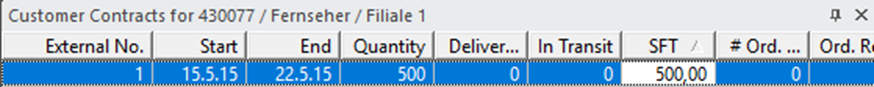
(Unlike reservations, a SFT is specified in the customer contract.)
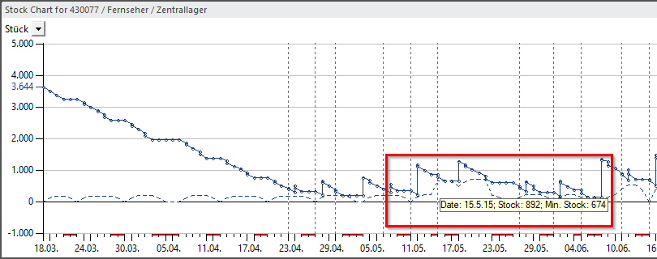
(The amount increases over the period from the beginning to the end.)
Contract types
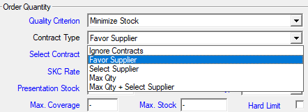
Ignore contracts
The contracts specified in the terms and conditions are ignored.
Favor Supplier
Supplier selection is based on the existing contract types. The time of availability is determined, with the underlying decision criterion defined in the “Contract selection” section.
Select Supplier
Suppliers are selected either on the basis of existing contracts or in accordance with the decision criteria specified in the section entitled “Select.”
Max. quantity
The maximum quantity that can be called off from the supplier.
Maximum quantity and supplier selection
The supplier is selected based on the maximum quantity that can be called up and the specified criteria for supplier selection.
Order splitting
If this option is enabled, order quantities for SKUs with multiple active suppliers can be split. The options Standing order and Order splitting are available, and both can be combined
Pseudo contracts
An additional SFT value can be specified for pseudo contracts. No customer number may be stored for this type
of contract, as otherwise the “Delivered” field may be filled in automatically. Pseudo customer contracts
imported from REMIRA do not contain the customer number, but the note “PSEUDO”.
Contracts at article level
An item can have multiple contracts, which are added in the Contracts tab of the Conditions window and automatically inherited by the associated SKUs.
Split supplier contracts
Supplier contracts can be split according to contract quantity and period from LOGOMATE version LM2021-11 / 8.5-03 onwards
To do this, select the options “Supplier selection and max. quantity” under [Parameters → Disposition → Contract type].
A separate order item is created for each contract.
The order number of the purchase order remains the same, only a new item with its own position number is added to the existing purchase order.
Buffer store logic
With buffer store logic, additional warehouses are created in LOGOMATE.
These can also be former branches or central warehouses that are no longer in operation.
The aim of these buffer stores is to use up their stock as quickly as possible.
This is implemented by transferring the demand from the active branches to the central warehouse.
The central warehouse then primarily uses the buffer store stocks before accessing its own stocks.
Requirements
-
The branch SKU must be transferred to both the central warehouse and the buffer store via the parts
list with the type “Default” and assigned to the respective suppliers,
whereby the suppliers of the buffer stores should be deactivated.
-
The buffer store must receive the central warehouse SKU via the bill of materials with the type “buffer SKU” and must have the same supplier that was also transferred for the store SKU, but this time active.
In addition, the “Type” parameter under the ‘Status’ tab must be set to “Forecast only, no MRP” and the SKU must be active.
If everything has been set up correctly, all store requirements should now be met primarily from the buffer stores.
Only when the buffer stores are empty should the central warehouse meet the requirements with its stock.
If the buffer stock is not yet empty and the demand from the branches cannot be met at the desired times, the following procedures are applied, depending on the system settings:
[Note: Contact your REMIRA representative, who will set this up for you.]
Scenario „Cutbacks “:
Basic starting point:
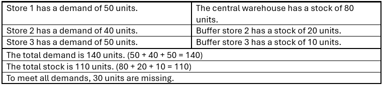
In the “cutback” scenario, orders would be reduced so that each branch could be supplied with the remaining stock from one warehouse.
Note: The system parameter “partially unfulfillable branch order” must be set to “shorten.”
It would then look like this:
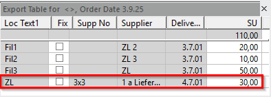
In the case of one-time calculations, an additional order for 30 items is created for the central warehouse in order to obtain the missing 30 items for the needs of the branches.
If a second calculation is performed or the system setting “Calculate twice if necessary” is activated, the export table looks as follows:
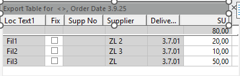
Branch 1 is reduced to 20 items because buffer store 2 has a stock of 20.
Branch 2 is reduced to 10 units because buffer warehouse 3 has a stock of 10.
Branch 3 will not be supplied because all buffer warehouses are empty and the central warehouse has more stock than Branch 3 needs.
Scenario „Splitting “:
Basic starting point:
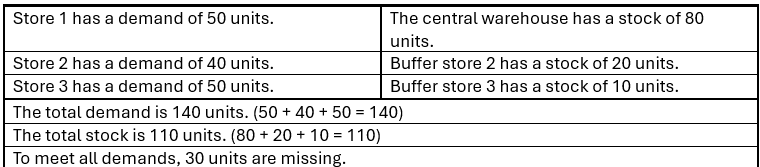
In the “split” scenario, all stores would be supplied with existing stock,
and the missing quantities would be reordered and delivered to the relevant stores.
Note: The system parameter “partially unfulfillable branch order” must be set to “split.”..
It would look like this:
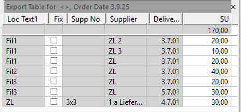
Orders with shorter delivery dates are generally prioritized. In cases such as this, where all orders have the same delivery date, the SKU at the top is prioritized.
As a result, this means that...
Store 1 is first supplied from the buffer store and the remaining demand is covered by the central warehouse.
Branch 2 is supplied entirely from the central warehouse, as all buffer warehouses are empty.
Branch 3 is supplied with the remaining stock from the central warehouse, and the rest is delivered later by the central warehouse, which reorders the missing 30 items.
(From version 8.5-11) „Move“ scenario
Basic starting point:
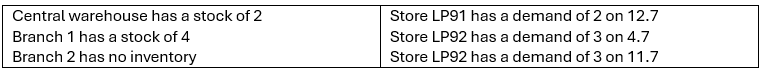
In the “Move” scenario, the stocks would be distributed to the branches that can be supplied completely and most quickly.
Note:The system parameter “partially unfulfillable store order” must be set to “postpone.”
It would look like this:
After calculating with „splitting“:
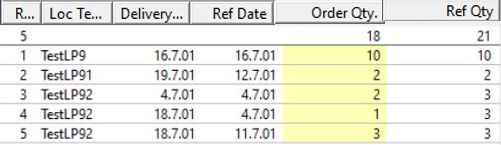
Since branch LP92 has no stock, the central warehouse prefers to order LP92 and delivers its 2 items.
This means that the order from branch LP91 will be postponed until July 19, as the central warehouse first has to replenish its stock with an order.
Subsequent calculation with „Move“:
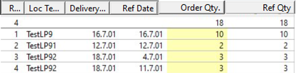
Since the order from branch LP91 can be fulfilled immediately, it will be given priority.
The delivery of the LP92 order will be postponed to July 18, as the central warehouse will have built up sufficient stock by then to fulfill this order, thanks to the delivery on July 16.